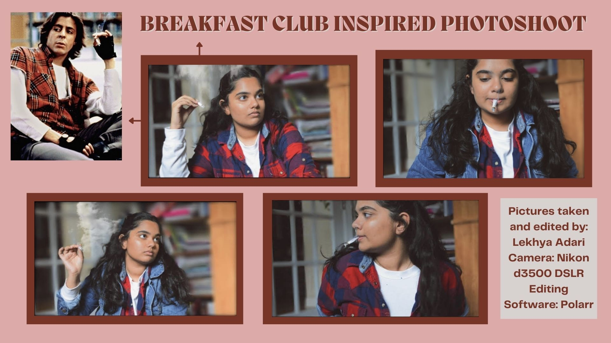
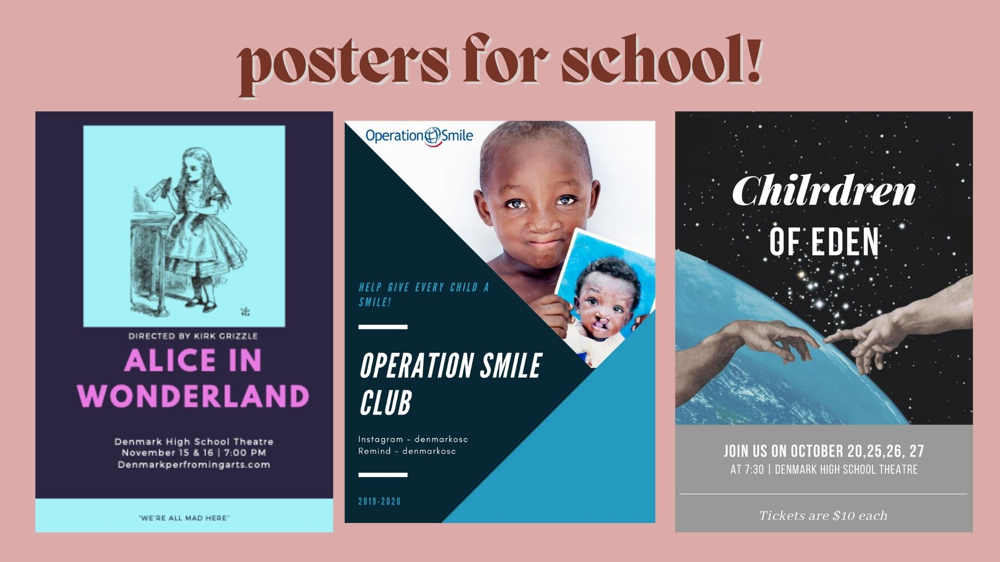

photography and digital work
 video edits on youtube! @lekhyaadari

I am a second year undergraduate student at Georgia Tech. I am interested in interaction design, artificial intelligence, video and audio production. I have experience with Adobe Creative Cloud, Microsoft Office, and several coding languages. I like to create digital art and edit videos. I love to read, listen to music, and watch movies. My favorite movie is The Parent Trap, my favorite book is the naturals, and my favorite artist is Lewis Capaldi.

You can find me by email: adarilekhya@gmail.com
or through Instagram: @lekhyaadari